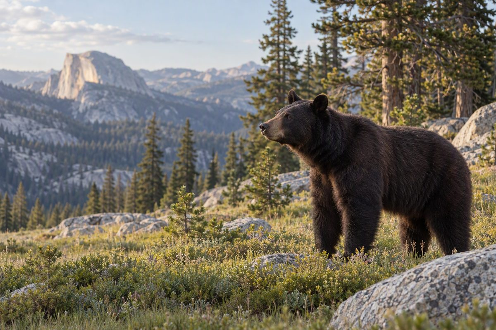
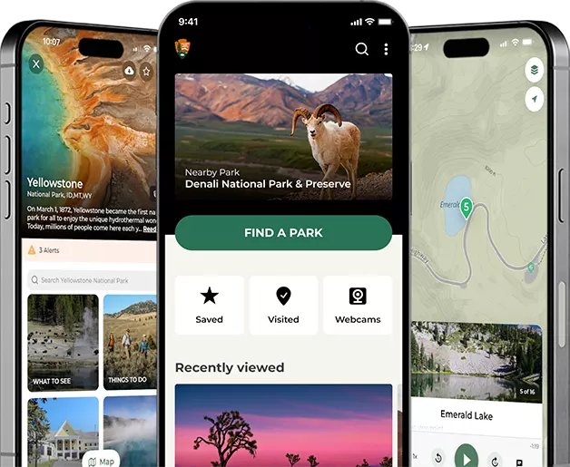

许可与预约
Permits
荒野过夜与半圆顶登顶都需要许可，且部分名额通过抽签发放， 中签率有限。这类许可的共同特点是：越早准备越有优势。
- 荒野许可：所有过夜徒步都需要，热门线路竞争激烈，建议在开放申请的第一时间提交。
- 半圆顶登顶：仅在钢索开放期间需要许可，先抽签、后放剩余名额。
- 营地预约：多数营地可在 Recreation.gov 提前预订，旺季常提前数月售罄。
- 备用思路：没中签可关注剩余名额释放，或改走不需要许可的日间线路。
详见 许可与预约。
交通与路况
Roads & Traffic
- 早出发：清晨 7 点前抵达入口，通常能避开最长的排队。
- 查路况：蒂奥加路与冰川点路季节性封闭，冬季部分路段要求携带防滑链。
- 少挪车：谷底停车位紧张，把车停在大型停车场后改乘免费班车最省心。
- 留足时间：园内道路限速低、弯道多，导航给出的时间往往偏乐观。
- 注意油量：园内加油点有限，进园前建议加满油。
门票与年票
Fees & Passes
- 按车计费：私家车门票按车辆收取，7 天内可多次进出，车上乘客不再单独收费。
- 年票更划算：若一年内会去两座以上国家公园，年票通常立刻回本。
- 保留票据：7 天有效期内再次进园需出示，请妥善保存。
- 线上与现场：可在入口现场购票，也可提前在线购买以加快入园。
!
费率会调整，请以 nps.gov 公布的当期价格为准。
本页所列金额仅为参考量级。
步道与安全
Trail Safety
- 按体力选线：谷底海拔约 1,200 米，爬升线路比看起来更耗体力，宁可留余量。
- 穿对鞋：防滑徒步鞋是必需品，尤其是雾径这类常年湿滑的石阶路段。
- 带够水：每人每天至少 2 升，长线要更多。园内取水点有限。
- 看天气：午后雷雨常见，避免在暴露的岩壁上久留，及时下撤。
- 告知行程：把路线与返回时间留给家人或同行者。
- 远离急流：融雪期河水湍急且极冷，绝不靠近湿滑岩石或下水。
!
紧急情况：园内拨打 911；
非紧急咨询可拨打 209 / 372-0200。
偏远区域常无手机信号，建议携带卫星通讯设备。
防熊与野生动物
Bears & Wildlife

园内栖息着约 500 头黑熊
优胜美地的黑熊早已学会把人类与食物联系起来。 一旦熊尝到人类食物，往往会变得主动索食，最终不得不被人道处理。
因此所有食物与有气味物品都必须妥善存放—— 这不是建议，而是园区的硬性规定。
- 存放食物：使用防熊箱，或锁进车内并遮盖可见部分；切勿放在帐篷里。
- 清理现场：不要留下任何食物残渣、包装或带有气味的物品。
- 保持距离：观赏野生动物时保持安全距离，不要投喂、不要追逐。
- 遇到熊时：不要奔跑，冷静后退、让自己显得高大，并用坚定语气说话驱离。
- 其他动物：松鼠、鹿与浣熊同样会翻找食物，请一视同仁地收好物品。
周边探索
Beyond the Park
若行程还有富余，园区外围也有值得顺路一游的去处。 它们通常人少、费用低，还能换个角度理解这片山地。
01
周边国家森林
园区外围被国家森林环绕，露营与徒步限制更少，适合想避开人潮的旅行者。
02
历史小镇
入口外的小镇提供餐饮、住宿与补给，是园外落脚的主要选择。
03
相邻景区
沿东部公路可串联其他高山景区，适合安排多日环线。
04
观星点
远离谷底灯光的区域夜空极佳，是欣赏银河的好位置。
NPS 官方应用
The NPS App

一个应用，装下所有国家公园
官方应用覆盖数百座国家公园，提供地图、导览、设施信息与 离线访问——这点在信号极差的园区里非常关键。
行前用它下载离线地图与当日状况，是应对园内断网最有效的准备。
i
应用可在主流应用商店免费下载。功能与覆盖范围会更新，
请以官方发布说明为准。